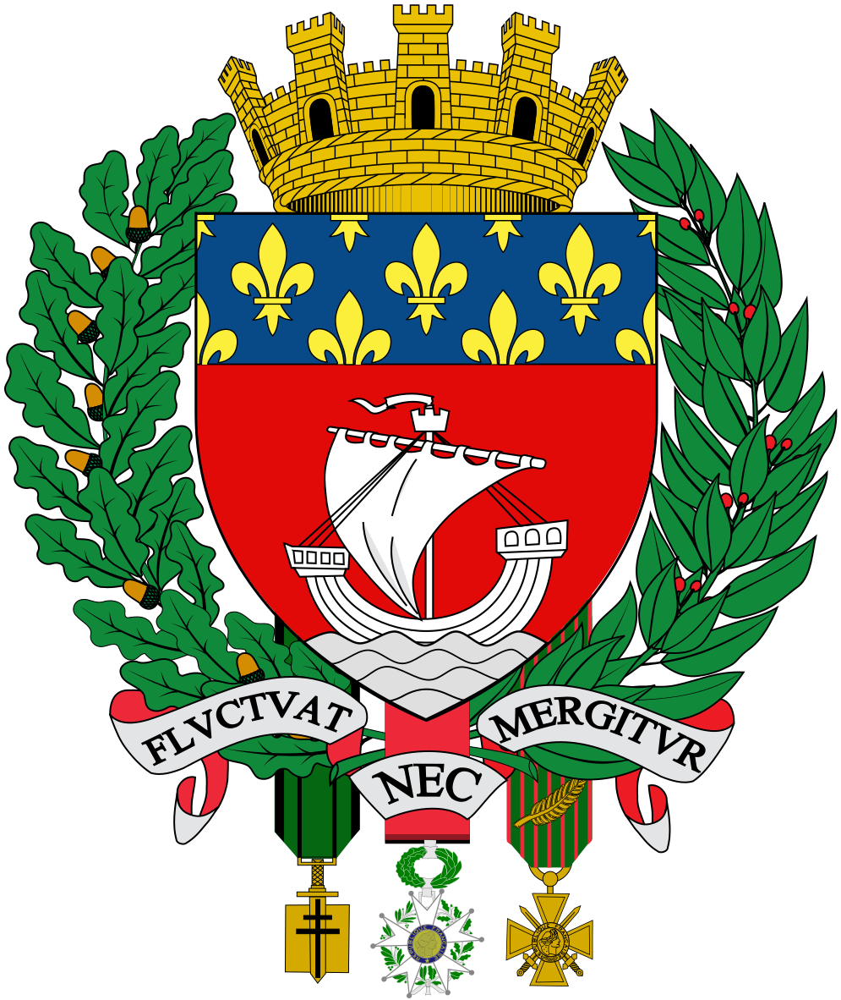

Paris
 Paris (prononcé [pa.ʁi] ) est la capitale de la France. Elle se situe au cœur d'un vaste bassin sédimentaire aux sols fertiles et au climat tempéré, le bassin parisien, sur une boucle de la Seine, entre les confluents de celle-ci avec la Marne et l'Oise. Ses habitants s’appellent les Parisiens. Paris est également le chef-lieu de la région Île-de-France et l'unique commune française qui est en même temps un département. Commune centrale de la Métropole du Grand Paris, créée en 2016, elle est divisée en arrondissements, comme les villes de Lyon et de Marseille, au nombre de vingt. L’État y dispose de prérogatives particulières exercées par le préfet de police de Paris. Ville la plus peuplée de France, elle est troisième parmi les aires urbaines européennes derrière Moscou et Istanbul et la 29e plus peuplée du monde. Paris compte au 1er janvier 2013 plus de 2,2 millions d'habitants. L'agglomération parisienne s’est largement développée au cours du XXe siècle, rassemblant 10,6 millions d'habitants au 1er janvier 2013 et son aire urbaine (l'agglomération et la couronne périurbaine) comptait 12,4 millions d'habitants. La position de Lutèce, sur une île permettant le franchissement du grand fleuve navigable qu'est la Seine par une voie reliant le Nord et le Sud des Gaules, en fait dès l'Antiquité une cité importante, capitale des Parisii, puis lieu de séjour d'un empereur romain. Sa position au centre du territoire contrôlé par les rois Francs la fait choisir comme capitale de la France à la place de Tournai. Située au cœur d'un territoire agricole fertile avec un climat humide et doux, Paris devient une des principales villes de France au cours du Xe siècle, avec des palais royaux, de riches abbayes et une cathédrale ; au cours du XIIe siècle, avec l'Université de Paris, la cité devient un des premiers foyers en Europe pour l’enseignement et les arts. Le pouvoir royal se fixant dans cette ville, son importance économique et politique ne cesse de croître. Ainsi, au début du XIVe siècle, Paris est l'une des villes les plus importantes du monde chrétien. Au XVIIe siècle, elle est la capitale de la principale puissance politique européenne, au XVIIIe siècle l'un des plus grands centres culturels de l’Europe et au XIXe siècle la capitale des arts et des plaisirs. Paris joue donc un rôle culturel, politique et économique majeur dans l’histoire de l'Europe et du monde occidental au cours du IIe millénaire. Symbole de la culture française, abritant de nombreux monuments, la ville, surnommée la Ville Lumière, attire dans les années 2000 près de 30 millions de visiteurs par an ce qui en fait une des capitales les plus visitées au monde. Paris occupe également une place prépondérante dans le milieu de la mode et du luxe. La ville est, avec sa banlieue, la capitale économique et commerciale de la France, ainsi que sa première place financière et boursière. La région parisienne, avec un produit intérieur brut (PIB) de 649 milliards d'euros en 2014, est un acteur économique européen majeur. L'Île-de-France est la huitième région la plus riche d'Europe avec un PIB par habitant 46 600 € en 2013 contre 86 400 pour le Grand Londres. Paris est le siège de plusieurs organisations internationales comme l'UNESCO ou l'OCDE. Elle est la première région européenne par le PIB régional, devant la Rhénanie du Nord-Westphalie (627 milliards) et le Grand Londres (509 milliards). La densité de ses réseaux ferroviaire, autoroutier et de ses structures aéroportuaires en font un point de convergence pour les transports nationaux et internationaux. Cette situation résulte d’une longue évolution, en particulier des conceptions centralisatrices des monarchies et des républiques, qui donnent un rôle considérable à la capitale dans le pays et tendent à y concentrer les institutions. Depuis les années 1960, les politiques gouvernementales oscillent toutefois entre déconcentration et décentralisation.

Nom local
Paris (fr)
Pays
France
Continent
Europe
Région du pays
Île-de-France
Gentillé
Parisiens
Maire
Anne Hidalgo
Nombre d'habitants
10 000 000 hab.
Densité
100 000 hab./km²
Superficie
100 km²
Altitude
100 m
Altitude minimum
80 m
Altitude maximum
150 m
Latitude
45.07891825
Longitude
4.5214843541